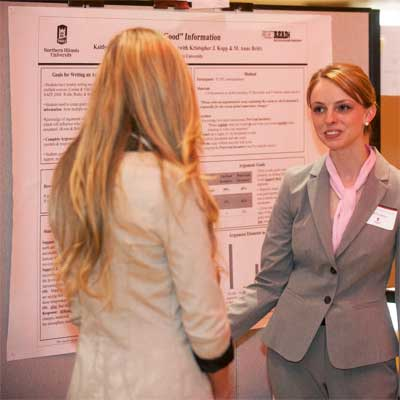

Faculty Researchers

TELOS aims to work across GSE program
areas, centers and projects to promote
discussion, research and innovation
focused on ways that technology can
increase education equity.
Learn more about our Projects
Students

TELOS aims to work across GSE program
areas, centers and projects to promote
discussion, research and innovation
focused on ways that technology can
increase education equity.
Find opportunities for you